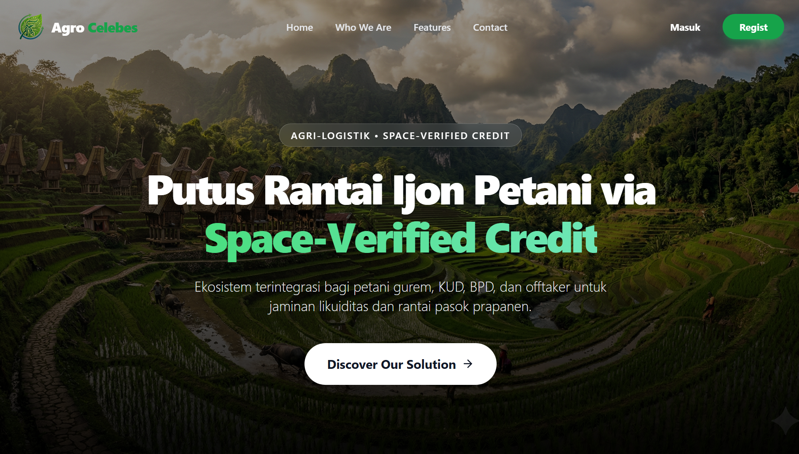
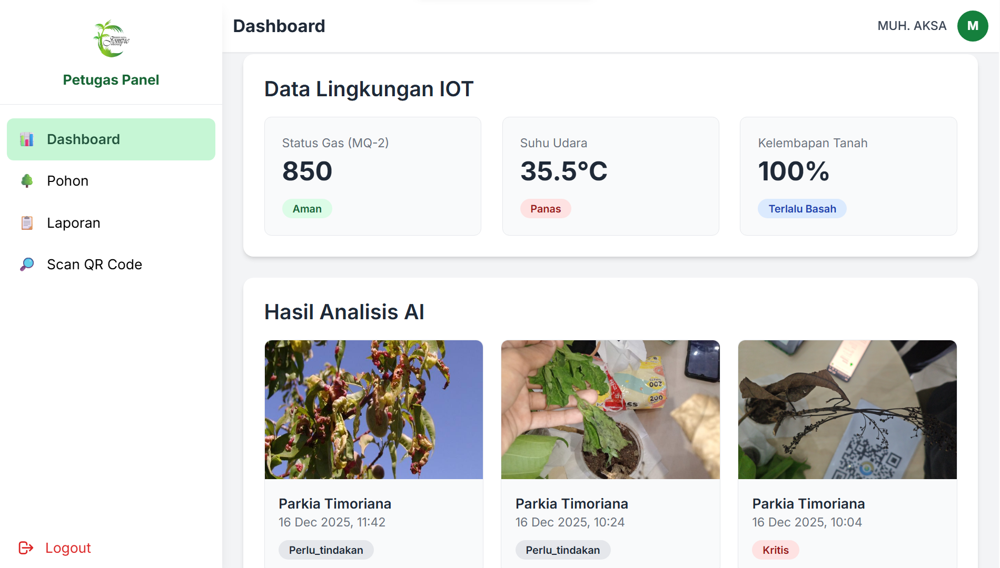
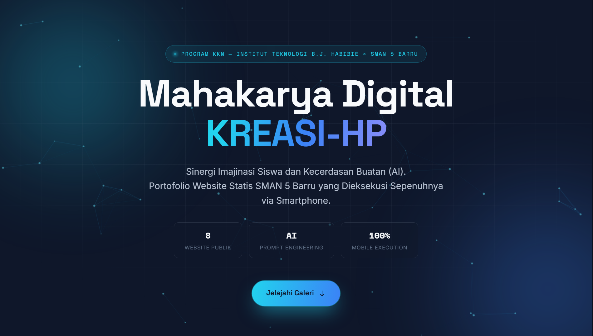
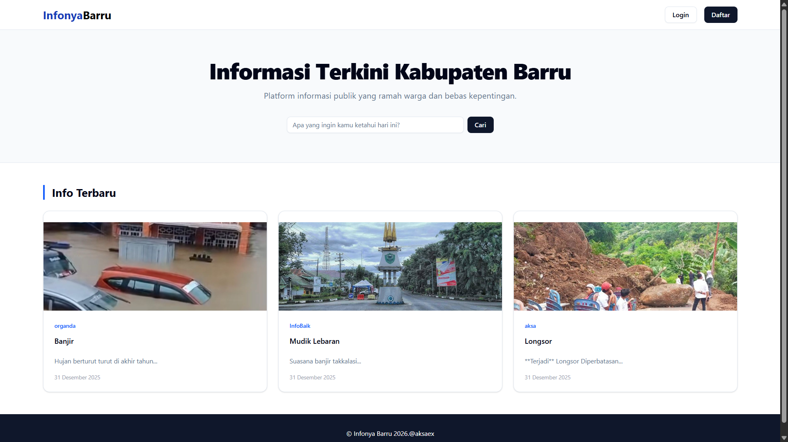
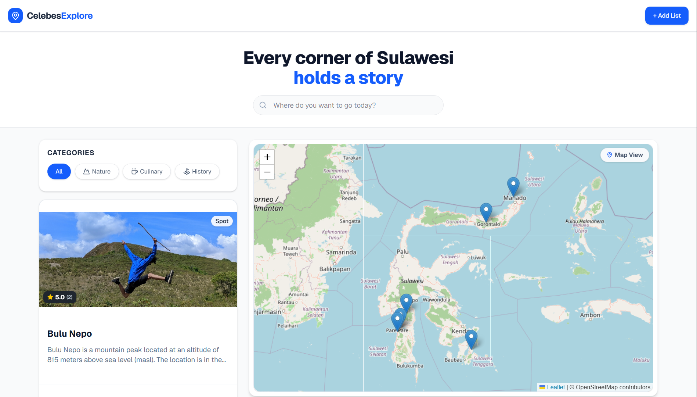
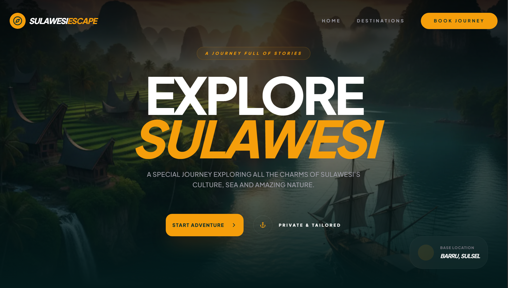
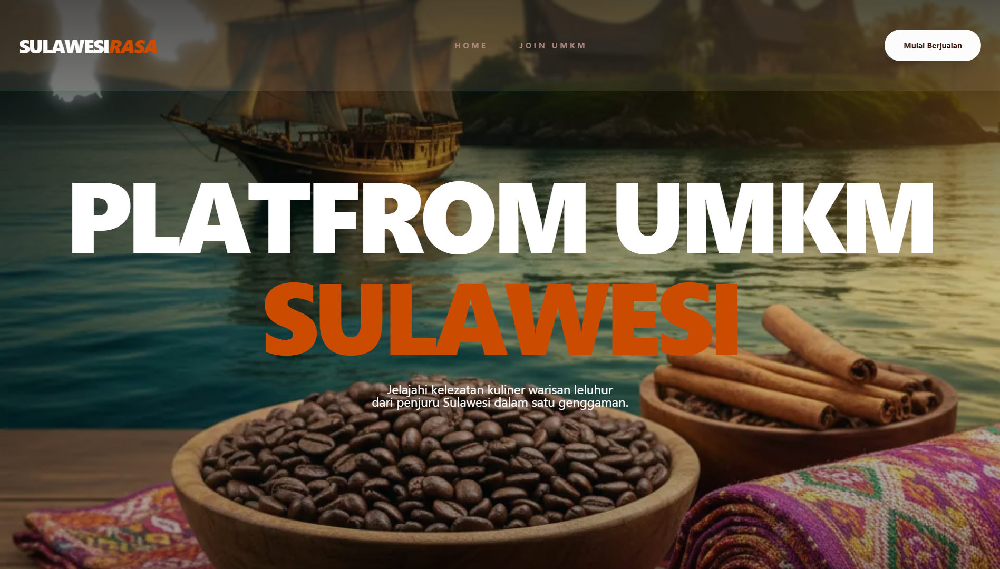
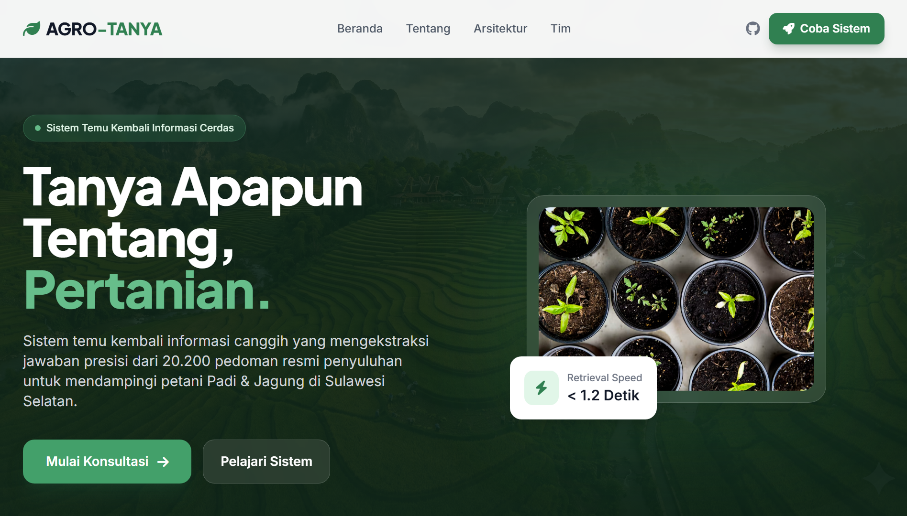
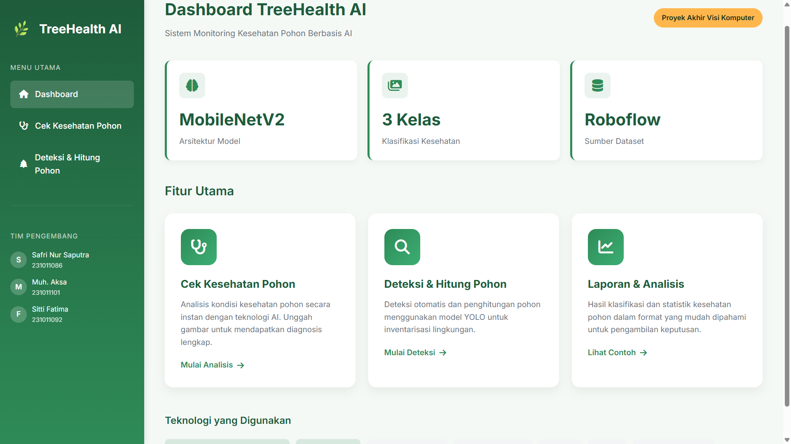

Open for Internship
Muh. Aksa
AI Engineer & Software Developer mahasiswa ITH
Saya membangun sistem AI terapan dan perangkat lunak produksi untuk menyelesaikan masalah nyata. Finalis Top 80 Nasional DIGDAYA x HACKATHON 2026 dan penggagas program literasi digital KREASI-HP.
Tentang Saya
Membangun Dampak Lewat Kode
Saya Muh. Aksa, mahasiswa semester 7 Ilmu Komputer di Institut Teknologi Bacharuddin Jusuf Habibie (ITH) dengan spesialisasi Artificial Intelligence dan Pengembangan Software.
Saya aktif menerjemahkan pembelajaran kelas menjadi solusi praktis melalui hackathon nasional, program komunitas, dan proyek independen. Pendiri Agro Celebes — agri-fintech dengan PWA offline-first dan sistem kredit berbasis satelit Sentinel-2 — serta penggagas KREASI-HP, program literasi digital yang mengajarkan coding via smartphone kepada 8 siswa SMA di Barru.
Saya percaya bahwa teknologi harus memberikan dampak sosial yang nyata. Saya terbuka untuk peluang magang AI Engineer atau Software Developer.
Barru, Sulawesi Selatan · Lulus 2027
Bahasa
- Indonesia — Native
- Inggris — Professional Working Proficiency
Minat
- Applied AI / Machine Learning
- RAG & LLM
- Software Architecture
- Social Impact Technology
Keahlian Teknis
Tech Stack & Spesialisasi
Kombinasi antara kecerdasan buatan, rekayasa perangkat lunak, dan keamanan siber.
AI / Machine Learning
Deep Learning
Prompt Engineering
Python
Full-Stack Web
PWA
Penetration Testing
RAG Architecture
IoT
Google Cloud (Basic)
Data Scraping
Sentinel-2
Git / CI/CD
Portofolio
Proyek Unggulan
Solusi nyata yang saya bangun dari konsep hingga implementasi, mulai dari hackathon, riset, hingga eksplorasi teknologi web.

Capstone · IoT + AI
Smart Tree Monitoring
Sistem pemantauan cerdas untuk melestarikan spesies pohon dilindungi di Kebun Raya Jompie, Parepare, dengan sensor IoT dan dashboard real-time.
IoTAIDashboardPython
GitHub
Private Repository






AI · Pertanian · Streamlit
AgroTanya
Platform tanya jawab berbasis AI untuk mendukung petani dan pelaku agribisnis dalam mengatasi permasalahan pertanian secara cepat dan akurat.
AIStreamlitPythonNetlify

Computer Vision · AI
Object Detection & Tree Health
Sistem deteksi objek dan analisis kesehatan pohon menggunakan computer vision, mendukung pemantauan lingkungan dan konservasi hutan secara efisien.
PythonYOLOCVAI
GitHub
Code Available
Pengalaman
Kepemimpinan & Kontribusi
Initiator & Tech Mentor — KREASI-HP
- Merintis program literasi digital yang mengajarkan coding via smartphone kepada siswa SMAN 5 Barru.
- Melatih siswa menggunakan AI prompting dan mendeploy website ke server publik.
- Membimbing 8 siswa untuk membuat portofolio digital yang dipamerkan di gallery KREASI-HP.
Founder & Project Lead — Agro Celebes
- Memimpin tim membangun agri-fintech PWA offline-first dengan AgroScore berbasis Sentinel-2.
- Merancang sistem escrow pra-panen dan mekanisme kredit alternatif.
- Mengintegrasikan RAG architecture untuk analisis data pertanian.
Pendidikan
Perjalanan Akademik
Sarjana Ilmu Komputer
- Spesialisasi: Artificial Intelligence dan Pengembangan Software
- Semester 7 · IPK: 3.71
- Aktif dalam kompetisi dan proyek riset
Kredensial
Sertifikasi & Lisensi
Semua sertifikat dapat diverifikasi secara online.
Prestasi
Penghargaan & Pengakuan
- Top 80 Nasional — PIDI Digdaya x Hackathon 2026 (Bank Indonesia & OJK) dengan proyek Agro Celebes.
- 8 Siswa Berhasil Deploy Website — Program KREASI-HP, melampaui target awal.
- 15 Sertifikasi Profesional — Dari Dicoding, LPPI, dan Merdeka Siber dalam bidang AI, software, dan manajemen.
Hubungi
Mari Berdiskusi
Saya sedang mencari peluang magang sebagai AI Engineer atau Software Developer. Jika Anda memiliki proyek menarik atau ingin berkolaborasi, jangan ragu untuk menghubungi saya.